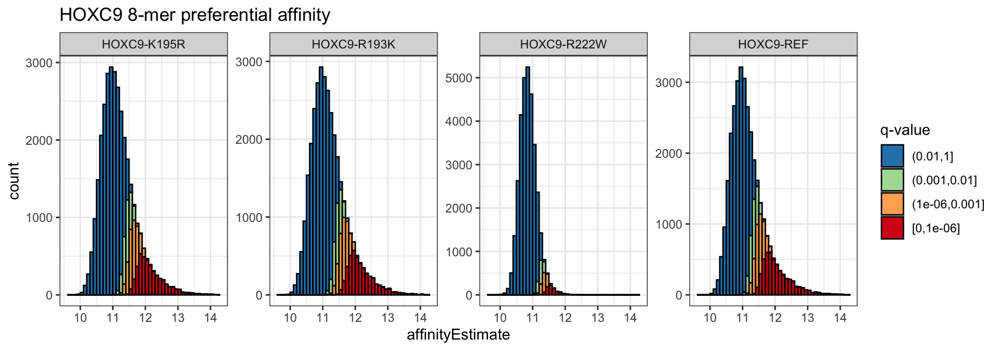
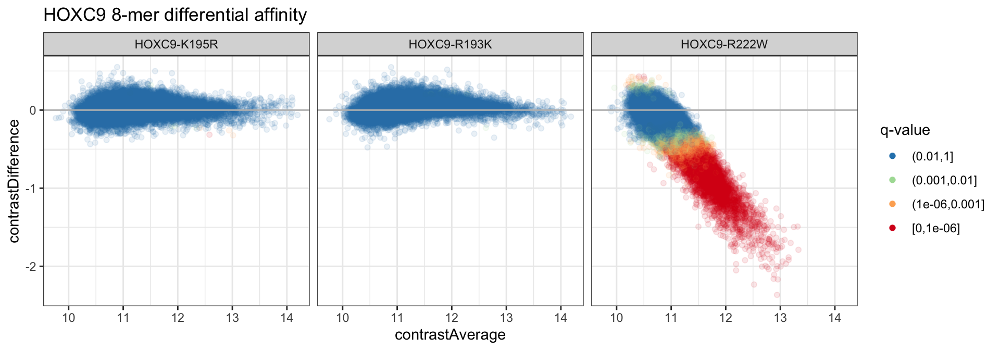
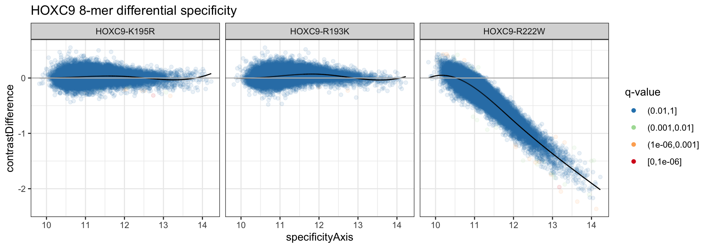
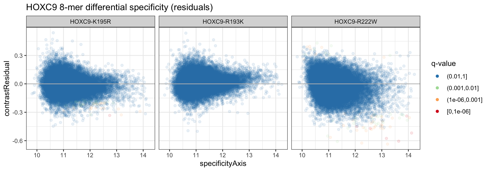

vignettes/analysis-inference.Rmd
analysis-inference.RmdFor an introduction to the upbm package, please see the quick start vignette (vignette("upbm-quickstart")). Here, we provide details on the various testing procedures briefly referenced in the quick start vignette. We assume basic knowledge of the PBMExperiment class (see vignette("upbm-classes")). The same example HOXC9 dataset from the upbmData package is also used in this vignette to illustrate the various functions.
The upbm package includes three testing functions which all take the output of upbm::kmerFit and return a table of 8-mer-level effect sizes and significance estimates. In the quick start vignette, only a single testing procedure was covered, namely, differential affinity testing using upbm::kmerTestContrast. The three testing procedures are:
upbm::kmerTestAffinity),upbm::kmerTestContrast),upbm::kmerTestSpecificity).We cover each procedure in detail in this vignette.
suppressPackageStartupMessages(library("upbm"))Throughout, we will be using broom::tidy to tidy data stored in PBMExperiment and SummarizedExperiment objects for interactive analysis and plotting (see vignette("other-tidydata")). We load the dplyr package to help with interactive analysis.
suppressPackageStartupMessages(library("dplyr"))
suppressPackageStartupMessages(library("ggplot2"))For details on the example HOXC9 dataset, see the quick start vignette in this package or the upbmData package vignette. Here, we will use both Alexa488 and Cy3 scans.
Here, we again use just single PMT gain scan for the Alexa488 scans.
We also load the reference Cy3 dataset.
data(refcy3_8x60k_v1, package = "upbmAux")We will perform the earlier steps of pre-processing using the upbm::pmbPreprocess wrapper. Details on pre-processing steps are covered in an earlier vignette (see vignette("analysis-preprocessing").
alexa_subset <- upbmPreprocess(pe = alexa_subset,
cy3pe = hoxc9cy3,
cy3refpe = refcy3_8x60k_v1,
verbose = FALSE)We will further summarize results to 8-mer-level affinity estimates with HOXC9-REF as the baseline condition. As above, details on summarization steps are covered in an earlier vignette (see vignette("analysis-summarization").
In contrast to the two other testing procedures which consider differential behavior across conditions, preferential affinity considers each condition separately. For each condition, we apply a testing procedure to determine the set of 8-mers preferentially bound by the condition. The upbm::kmerTestAffinity function only takes the single PBMExperiment returned by upbm::kmerFit as input.
alexa_pa <- kmerTestAffinity(alexa_kfit)
alexa_pa## class: SummarizedExperiment
## dim: 32896 4
## metadata(0):
## assays(6): affinityEstimate affinityVariance ... affinityP
## affinityQ
## rownames: NULL
## rowData names(1): seq
## colnames(4): HOXC9-K195R HOXC9-R193K HOXC9-R222W HOXC9-REF
## colData names(0):The returned PBMExperiment object contains the results of affinity testing in several assays along with many of the same assays as the input.
## [1] "affinityEstimate" "affinityVariance" "affinitySignal"
## [4] "affinityZ" "affinityP" "affinityQ"Importantly, the new affinitySignal assay contains the estimated “signal” component of the K-mer affinity (affinityEstimate assay). The signal component is computed by fitting a normal and expontential convolution to the K-mer affinity estimates and taking the expected exponential component. This is similar to a step included in the RMA approach to microarray data normalization (Irizarry et al. 2003). The affinityZ, affinityP and affinityQ, contain the z-score, un-adjusted and adjusted p-values from testing the null hypothesis that affinitySignal is zero.
The distribution of affinityEstimates can be colored by the adjusted p-values (affinityQ) to show the distribution of preferentially bound 8-mers in each condition. We bin the significance values for cleaner plotting.
pa_dat <- broom::tidy(alexa_pa, c("affinityEstimate", "affinityQ"))
pa_dat %>%
dplyr::mutate(affinityQ = cut(affinityQ, c(1e0, 1e-2, 1e-3, 1e-6, 0),
include.lowest = TRUE),
affinityQ = factor(affinityQ, levels = rev(levels(affinityQ)))) %>%
ggplot(aes(x = affinityEstimate, fill = affinityQ)) +
geom_histogram(binwidth = .1, boundary = 10, color = 'black', position = "stack", alpha = 1) +
scale_fill_brewer("q-value", palette = "Spectral", direction = -1, drop = FALSE,
na.value = "black") +
theme_bw() +
facet_wrap( ~ cname, nrow = 1, scales = "free_y") +
ggtitle("HOXC9 8-mer preferential affinity")
Differential affinity is likely to most intuitive of the three testing procedures. With differential affinity, we are interested in identifying the set of 8-mers with differential signal across PBM samples between the specified baseline and all other conditions. The underlying hypothesis we test here is whether the estimated affinity differences are zero or not.
The upbm::kmerTestContrast, again, only takes the single PBMExperiment returned by upbm::kmerFit as input.
alexa_da <- kmerTestContrast(alexa_kfit)
alexa_da## class: SummarizedExperiment
## dim: 32896 4
## metadata(0):
## assays(6): contrastAverage contrastDifference ... contrastP
## contrastQ
## rownames: NULL
## rowData names(1): seq
## colnames(4): HOXC9-K195R HOXC9-R193K HOXC9-R222W HOXC9-REF
## colData names(0):The returned PBMExperiment object contains the results of differential affinity testing a few new assays. The contrastZ, contrastP, and contrastQ contain the z-score, and unadjusted and adjusted p-values for the test at each 8-mer.
## [1] "contrastAverage" "contrastDifference" "contrastVariance"
## [4] "contrastZ" "contrastP" "contrastQ"Here, the z-score is simply the ratio of the contrastDifference and contrastVariance computed during the upbm::kmerFit call. We can again plot the results as an MA plot and color 8-mers by significance level. We also remember to exclude the baseline condition, HOXC9-REF, from the table as all of the values are NAs.
da_dat <- broom::tidy(alexa_da, c("contrastAverage", "contrastDifference",
"contrastQ"))
da_dat <- da_dat %>%
dplyr::filter(cname != "HOXC9-REF") %>%
dplyr::mutate(contrastQ = cut(contrastQ, c(1e0, 1e-2, 1e-3, 1e-6, 0),
include.lowest = TRUE),
contrastQ = factor(contrastQ, levels = rev(levels(contrastQ))))
da_dat %>%
ggplot(aes(x = contrastAverage, y = contrastDifference,
color = contrastQ)) +
geom_point(alpha = 1/10) +
scale_color_brewer("q-value", palette = "Spectral", direction = -1, drop = FALSE,
na.value = "black") +
geom_hline(color = 'gray', yintercept = 0) +
theme_bw() +
guides(color = guide_legend(override.aes = list(alpha = 1))) +
facet_grid(. ~ cname) +
ggtitle("HOXC9 8-mer differential affinity")
We can see that few 8-mers are called differential for most of the conditions. More formally, we can count up the number of 8-mers at each of the different significance thresholds above.
## # A tibble: 3 x 5
## cname `(0.01,1]` `(0.001,0.01]` `(1e-06,0.001]` `[0,1e-06]`
## <chr> <dbl> <dbl> <dbl> <dbl>
## 1 HOXC9-K195R 32885 7 3 1
## 2 HOXC9-R193K 32882 14 0 0
## 3 HOXC9-R222W 20623 2991 4075 5207Differential specificity, while similar to affinity is treated separately. In some comparisons, the two proteins being contrasted may have completely different binding preferences, preferring different subsets of 8-mers. We call this phenomenon differential specificity.
In the MA plot above, we see that the general trend for all contrasts is a single trajectory, even for the R222W allele. This is the result of shared specificity, even with decreased affinity. In contrast, when differential specificity is present, rather than follow a single trajectory, the MA plot will appear to split, with 8-mers preferential in the two condition spreading.
Intuitively, testing for differential specificity is performed by first fitting a single trajectory to the MA plot, followed by testing for deviations from the trajectory. Since deviations from the baseline condition are often of more interest, rather than using the average between conditions as the x-axis, the trajectory is fit with the reference affinity along the x-axis. This can be changed by setting useref = FALSE in the call to upbm::kmerTestSpecificity.
alexa_ds <- kmerTestSpecificity(alexa_kfit)
alexa_ds## class: SummarizedExperiment
## dim: 32896 4
## metadata(0):
## assays(9): contrastAverage contrastDifference ... specificityQ
## specificityAxis
## rownames: NULL
## rowData names(1): seq
## colnames(4): HOXC9-K195R HOXC9-R193K HOXC9-R222W HOXC9-REF
## colData names(0):By default, the trajectory is fit using cubic B-splines with 3 knots placed evenly spaced along the range of the x-axis. Alternatively, a LOESS smoother can be fit by specifying method = "loess".
The returned PBMExperiment includes several new assays.
## [1] "contrastAverage" "contrastDifference" "contrastVariance"
## [4] "contrastFit" "contrastResidual" "specificityZ"
## [7] "specificityP" "specificityQ" "specificityAxis"The x-axis used for fitting the specificity trend is stored in the specificityAxis assay. The fit and residuals are included in the contrastFit and contrastResidual assays. Finally, the specificityZ, `specificityP, and specificityQ assays contain the z-score, unadjusted and adjusted p-values from testing the null hypothesis that contrastResidual is zero.
We can plot the data along with the contrastFit to see the B-spline trajectories fit to the data.
ds_dat <- broom::tidy(alexa_ds, c("specificityAxis", "specificityQ",
"contrastDifference", "contrastFit",
"contrastResidual"))
ds_dat <- ds_dat %>%
dplyr::filter(cname != "HOXC9-REF") %>%
dplyr::mutate(specificityQ = cut(specificityQ, c(1e0, 1e-2, 1e-3, 1e-6, 0),
include.lowest = TRUE),
specificityQ = factor(specificityQ, levels = rev(levels(specificityQ))))
ds_dat %>%
ggplot(aes(x = specificityAxis)) +
geom_point(aes(y = contrastDifference, color = specificityQ), alpha = 1/10) +
theme_bw() +
geom_line(aes(y = contrastFit), color = 'black') +
scale_color_brewer("q-value", palette = "Spectral", direction = -1, drop = FALSE,
na.value = "black") +
geom_hline(yintercept = 0, color = 'gray') +
guides(color = guide_legend(override.aes = list(alpha = 1))) +
facet_grid(. ~ cname) +
ggtitle("HOXC9 8-mer differential specificity")
We see that unlike differential affinity, very few 8-mers are called in the differential specificity analysis for all alleles.
## # A tibble: 3 x 5
## cname `(0.01,1]` `(0.001,0.01]` `(1e-06,0.001]` `[0,1e-06]`
## <chr> <dbl> <dbl> <dbl> <dbl>
## 1 HOXC9-K195R 32837 36 22 1
## 2 HOXC9-R193K 32896 0 0 0
## 3 HOXC9-R222W 32825 31 34 6We can similarly plot the residuals as well.
ds_dat %>%
ggplot(aes(x = specificityAxis)) +
geom_point(aes(y = contrastResidual, color = specificityQ), alpha = 1/10) +
geom_hline(yintercept = 0, color = 'gray') +
theme_bw() +
scale_color_brewer("q-value", palette = "Spectral", direction = -1, drop = FALSE,
na.value = "black") +
guides(color = guide_legend(override.aes = list(alpha = 1))) +
facet_grid(. ~ cname) +
ggtitle("HOXC9 8-mer differential specificity (residuals)")